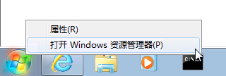
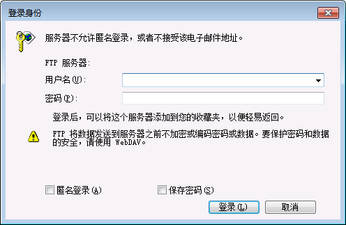
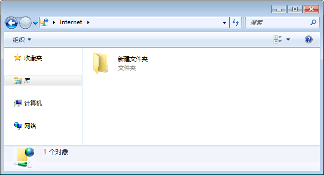

Windows 使用者
- 在「开始」微软图示按「滑鼠右键」，点选「打开 Windows 资源管理器」

- 并于「地址栏」上，直接输入 ftp://，例如下图，并按键盘「Enter」键。
- 出现「登录身份」后
在「用户名」：输入登录WMPro平台时所使用的帐号
在「密码 」：输入登录的密码，或「教材上传」画面所提供的「动态密码」
并点选「登录」
- 登录后，就会出现下图画面，显是课程内的教材档案

注意事项
- 您必须先登录学习网站，并进入课程的「教师办公室」中，在点选「课程管理」的「教材上传」，必须停留在此，才能使用FTP软体上传档案到课程之中；若您尚未登录学习网站，只开启FTP软体，是无法用FTP上传教材的。
- 您以FTP登录的路径将会是您目前所在的课程教材目录，若要将教材上传到其他课程，请先关闭开启FTP连线中的「打开 Windows 资源管理器」，再切换到其他课程「教师办公室」中的「教材上传」，重新进行FTP连线即可。